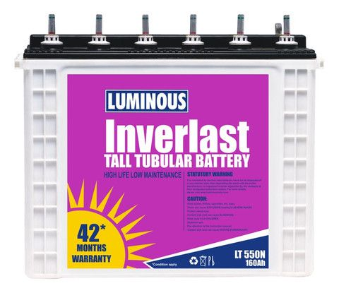
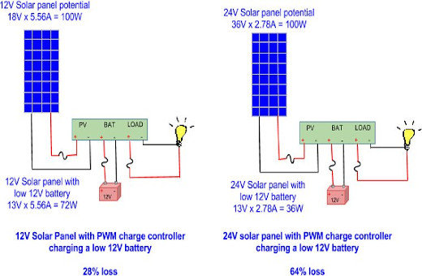
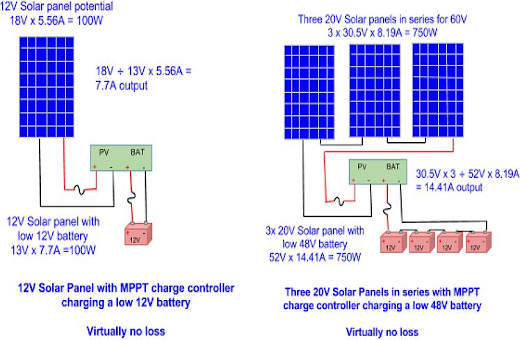

Today’s solar batteries are better than ever. So are the devices that regulate and protect them. But you still need to do your homework to make sure you get the best solar battery storage solution for your needs.
Solar batteries are really deep cycle batteries that provide energy storage for solar, wind and other renewable energy systems. Different from a car battery, a deep cycle battery is designed to handle prolonged, repeated and deep discharges which are typical in renewable energy systems that are off grid (disconnected from the electric utility company).
Solar Batteries (Deep Cycle Solar Batteries) are a key component in a stand-alone renewable energy system—whether the solar system is off-grid or the battery bank is used for backup in case of electrical grid failure. If you are installing a wind, solar panel or hydroelectric system that will be tied to your utility grid, you will still need deep cycle batteries if you are trying to use power in the event of an outage. Without deep cycle batteries, you can only use power at the time you produce it (i.e. you will not have power when the sun isn't out if you don't have batteries in your solar electric system).
In renewable energy systems, deep cycle batteries provide the energy storage for your system. Unlike your car battery, deep cycle batteries that are used in renewable energy applications are meant to be discharged and recharged (cycled) repeatedly. To maintain healthy batteries and prolong battery life, most manufacturers suggest limiting the depth of discharge (DoD) to about 20%. (That means that deep cycle batteries should always have a State of Charge (SoC) of 80% or greater.) At the very least, do not allow the batteries to be discharged below 50% Depth of Discharge (DOD). Often an inverter will have a Low Voltage Disconnect feature that will disconnect loads at a given "set point." Low voltage alarms can provide audible warnings as well. Ammeters, Voltmeters, Battery Monitors can help better maintain deep cycle battery health, and provide statistics about the overall health of the system.
When selecting deep cycle batteries for storage from your solar array or wind turbine, you'll have the option to use flooded lead acid (FLA) batteries, sealed batteries (AGM or Gel cell), or lithium batteries. Keep in mind that FLA batteries require a bit of maintenance, however, they generally last longer than their sealed counterparts. Water miser vent caps, which reduce battery watering, can also reduce the frequency at which deep cycle batteries need watering. You'll need one vent cap for each 2 V cell.
Deep cycle battery banks consist of one or more batteries, and are measured in amp hours of storage capacity. Each deep cycle battery can be 2, 4, 6, or 12 volts DC (Vdc). The choice of individual solar battery voltage will depend upon your total system voltage (12, 24 or 48 Vdc) and your desired amp hours (Ah) of storage. Often the 2V deep cycle batteries offer the largest amount of storage; however, you may need up to 24 of these huge deep cycle batteries if your system is 48 volts.
Connect your solar batteries (i.e. deep cycle batteries), using solar battery interconnect cables, in series, parallel, or a combination of both depending upon your system voltage and the storage capacity you need. Read more about this in the how to section about deep cycle battery bank sizing. While deep cycle batteries may be a large expense for a sizeable off grid system, with proper care and maintenance, they should last 5-10 years. Let us know how many watt hours per day you need to provide, and the number of days of storage you need, and we'll be happy to offer specific sizing recommendations for your deep cycle batteries.
Deep cycle batteries come in many sizes: From batteries that are less than 10 pounds to ones that weigh over 200 pounds each! They can be small (and fit in a backpack) or large (2' x 2' x 1') and anywhere in between. Generally, the size and weight correspond
with amp hours (Ah) of storage. If you need a lot of energy storage, be sure that you have the appropriate space to house the batteries, and brawny people to help you put them in place.
Whether you
have one battery or a bank of 36, proper storage is essential. Battery boxes can provide a neat and safe way to contain the batteries, or you can build your own battery box. Often people add an optional battery ventilators or battery
fans. Battery fans can vent the hydrogen gas that is naturally exhausted when deep cycle batteries are charging.
A solar charge controller manages the power going into the battery bank from the solar array. It ensures that the deep cycle batteries are not overcharged during the day, and that the power doesn’t run backwards to the solar panels overnight and drain the batteries. Some charge controllers are available with additional capabilities, like lighting and load control, but managing the power is its primary job.
A solar charge controller is available in two different technologies, PWM and MPPT. How they perform in a system is very different from each other. An MPPT charge controller is more expensive than a PWM charge controller, and it is often worth it to pay the extra money.
A PWM solar charge controller stands for “Pulse Width Modulation”. These operate by making a connection directly from the solar array to the battery bank. During bulk charging, when there is a continuous connection from the array to the battery bank, the array output voltage is ‘pulled down’ to the battery voltage. As the battery charges, the voltage of the battery rises, so the voltage output of the solar panel rises as well, using more of the solar power as it charges. As a result, you need to make sure you match the nominal voltage of the solar array with the voltage of the battery bank. *Note that when we refer to a 12V solar panel, that means a panel that is designed to work with a 12V battery. The actual voltage of a 12V solar panel, when connected to a load, is close to 18 Vmp (Volts at maximum power). This is because a higher voltage source is required to charge a battery. If the battery and solar panel both started at the same voltage, the battery would not charge.
A 12V solar panel can charge a 12V battery. A 24V solar panel or solar array (two 12V panels wired in series) is needed for a 24V battery bank, and 48V array is needed for 48V bank. If you try to charge a 12V battery with a 24V solar panel, you will be throwing over half of the panel’s power away. If you try to charge a 24V battery bank with a 12V solar panel, you will be throwing away 100% of the panel’s potential, and may actually drain the battery as well.
An MPPT solar charge controller stands for “Maximum Power Point Tracking”. It will measure the Vmp voltage of the panel, and down-converts the PV voltage to the battery voltage. Because power into the charge controller equals power out of the charge controller, when the voltage is dropped to match the battery bank, the current is raised, so you are using more of the available power from the panel. You can use a higher voltage solar array than battery, like the 60 cell nominal 20V grid-tie solar panels that are more readily available. With a 20V solar panel, you can charge a 12V battery bank, or two in series can charge up to a 24V battery bank, and three in series can charge up to a 48V battery bank. This opens up a whole wide range of solar panels that now can be used for your off-grid solar system.
